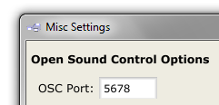
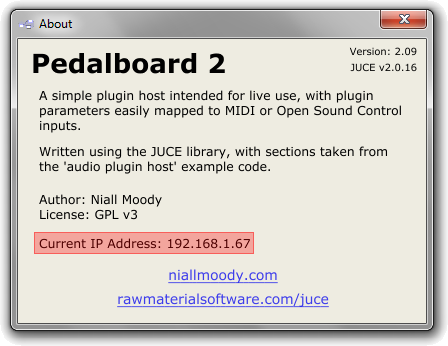
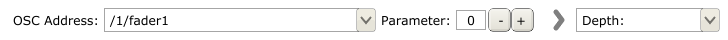
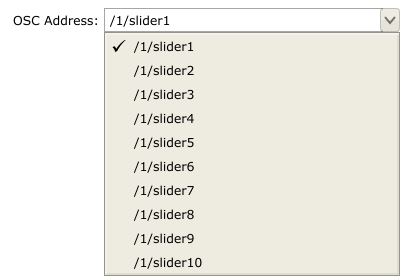
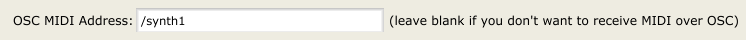

Open Sound Control Mappings
Plugin parameters can be mapped to Open Sound Control (OSC) addresses via the add OSC button in the plugin's Mappings Window. This page explains the various controls. If you are new to the Open Sound Control protocol, you may want to read the Open Sound Control Primer page.
Open Sound Control Setup
In order to make use of the Pedalboard's OSC support, there are two things to setup:
OSC Port
This is the port that the app will listen on for new OSC messages. It must match the port that your OSC client is sending messages to. To set the port, go to Options->Misc Settings:

The Pedalboard's IP Address
This is the current IP address of your computer. Your OSC client will need to know this in order to send OSC messages to the Pedalboard. In order to find out your current IP address, simply go to Help->About; it is highlighted in the following screenshot:

Mapping Parameters
When setting up an OSC mapping, you are presented with the following parameters:

The combobox on the left is the OSC address which will be mapped to the plugin parameter in the combobox on the right. The OSC address combobox can be edited by hand, but it will also be populated by the Pedalboard's OSC Learn functionality.
The parameter control is for OSC messages which contain more than one value. This control simply lets you select which value you map to the corresponding plugin parameter. TouchOSC, for example, sends accelerometer data as a single /accxyz message with separate values for each of the three axes; mapping the z-axis to a plugin parameter would require you to select parameter 2 in this case. In most cases however the parameter control can safely be left set to 0.
One thing to note is that the Pedalboard assumes any OSC input it receives is in the range 0->1. Values outside that range may result in plugins behaving erratically.
OSC Learn

To simplify OSC mappings, the Pedalboard has a basic 'OSC Learn' function, similar to the MIDI Learn function common to many hosts. Put simply, any time the Pedalboard receives an OSC message, it takes a note of that message's address. When setting up an OSC mapping, every address the app has received to date will then be listed in the address combobox, as can be seen above.
Note that the OSC address combobox is not updated in realtime, meaning the mappings window must be closed while new OSC messages are sent to the app.
A quick run-through of the steps required to make use of the Pedalboard's OSC Learn functionality:
- Ensure the app is listening on the desired port, and that your OSC client is sending messages to the correct IP address (see above).
- In your OSC client, trigger all the OSC messages you might want to map to plugin parameters (e.g. in TouchOSC, toggle all the buttons, move all the sliders, etc.).
- Open the desired plugin's mapping window, and click add OSC. You should see all the available OSC addresses in the OSC address combobox's drop-down list.
MIDI Over OSC
By default, the app's implementation of OSC is focused on manipulating plugin parameters. It is also possible, however, to trigger instrument plugins by sending MIDI messages via the OSC protocol, bypassing the need to have MIDI hardware connected to the machine the pedalboard is running on.

To have an instrument plugin respond to MIDI over OSC messages, simply open its mappings window and enter an OSC address for it, as shown above. Now whenever the app receives an OSC message destined for that address, it will treat it as a MIDI message and pass it on to the plugin as such.
As far as I could tell when implementing this feature, there isn't one agreed-upon standard for sending MIDI messages over OSC, so the Pedalboard accepts two different MIDI/OSC message formats:
- OSC messages using the 'm' typetag. These messages consist of three bytes, identical to a standard MIDI message.
- OSC messages with three distinct int or float values, corresponding to the values of the three bytes in a standard MIDI message. This is probably the most compatible format. To trigger a Note On event for example, you would send the OSC message: /synth1 144 60 127 where the three numbers mean <This is a Note On event> <referring to middle-C> <with a velocity of 127>.